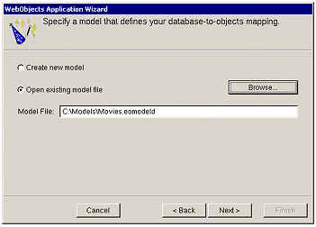
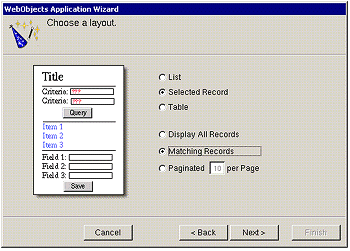
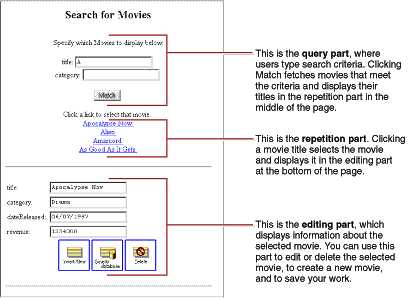
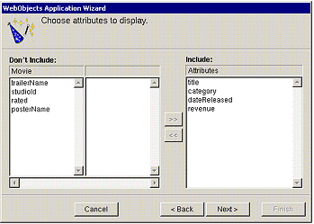
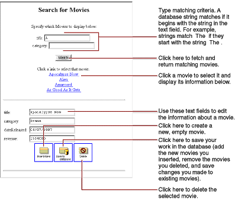

| PATH |

Every WebObjects application has at least one component-usually named Main-that represents the first page the application displays. In Movies, the Main component represents the MovieSearch page.
To design the Main component, you'll use the WebObjects Application Wizard. The wizard performs all the setup that's necessary to fetch database records and display them in a web page. Specifying different wizard options yields different pages: The MovieSearch page is an example of one of the many different layouts you can generate with the wizard.
This starts the WebObjects Application Wizard.
With this option, the wizard guides you through the creation of a Main component for your application. When you finish, you can immediately build and run your application without performing any additional steps and without adding any code.

Movies.eomodeld.In this page, the wizard asks you to choose the entity around which the Main component will be centered. Your Main component centers around the Movie entity.
The wizard provides several page layout options for formatting objects fetched from the database.

Based on your specifications, the wizard shows you a preview of the page it will generate. To see how the wizard's preview corresponds with the actual page the wizard will create, the finished page is shown below.

There are three parts to this page: the query part (at the top of the page), which contains fields in which users provide search criteria; the repetition part (in the middle of the page), which contains a list of matching records fetched from the database; and the editing part (at the bottom of the page), which allows you to make changes to the selected record.
The next step is to choose which of the Movie entity's attributes to display in the editing part at the bottom of the page.

The order in
which you add the attributes determines the order in which they
appear on the page, so add them in the following order: title, category, dateReleased,
and revenue.
Don't
add any of the remaining attributes (for example, trailerName, studioId, rated, and posterName)-they
aren't used in this tutorial.
You now need to specify the attribute used in the repetition part of the page to identify each record. This attribute will be displayed as a hyperlink. Clicking the hyperlink displays the corresponding record in the detail part of the page.
title attribute
to the Include browser.Specify the attributes to display in the query part of the page. The wizard creates search criteria fields for each of the attributes you choose.
title and category attributes
to the Include browser.When the wizard finishes, your new project is displayed in Project Builder. The wizard has produced all the files and resources for a fully functional, one-page application. All you need to do before running your Movies application is build it.
Figure 3-1 Build and run the application as you did in the previous tutorials.

Experiment with the application by entering different search criteria and inserting, updating, and deleting movies. For example:
Type A in the title field, and click Match.
When you're done, perform another search to verify that your change was saved.
Click Insert/New to create a new, empty movie. Fill out all the fields, and click "Save to database." Search for your movie to verify that it was saved successfully.
With your movie selected, click Delete and then click "Save to database." When you're done, search for the movie again to verify that it's been deleted.
© 2001 Apple Computer, Inc.